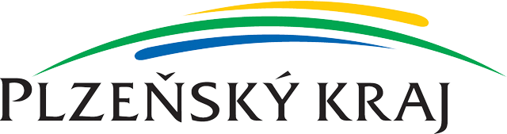

Interaktivní MHD mapa
Interaktivní mapa MHD KLATOVY je přehledná vizualizace vytvořená především pro občany města Klatov. Má pomoci lépe se orientovat v linkách a zastávkách místního MHD.
Snažili jsme se, aby mapa byla přehledná a jednoduchá na ovládání. Na této stránce naleznete také informace o tomto projektu. Doufáme, že Vám, jako občanům Klatov mapa dobře poslouží.
POŘADATEL SOUTĚŽE

Sponzorováno plzeňským krajem v rámci vzdělávání 4.0